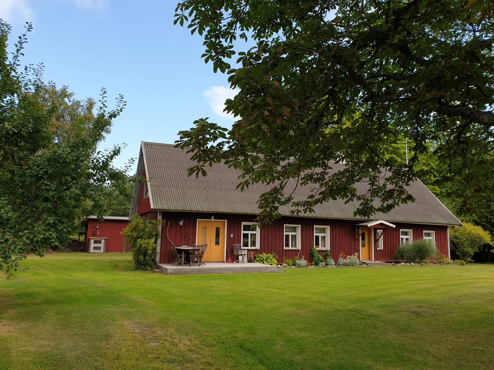

With Maria Kostylew, Kirke Joamets, and Kaarel Hänni as the organizing team1, and with Hugo Eberhard, Richard Luhtaru, and Kaarel Hänni as lecturer-TAs, and with a total of 13 and average of ~9 other participants (most of whom are Kaarel’s research collaborators and/or friends), we ran an informal 1-week linear algebra retreat [04-11]/08/2023 in Atla, Saaremaa, Estonia. The point of the retreat was to teach participants a few ‘intermediate topics’ in linear algebra, in part to gain more comfort with linear algebra more generally, as well as to co-work or just rest.
Main content days had 1-2 hours of lecture followed by an arbitrary number of hours of working on problem sets individually or in groups, with assistance from TAs if desired.
The password for the SVD and convexity problem sets, as well as a pre-retreat review pset, is (probably) available upon request.2
We also had a review pset review session by Kaarel, Richard, and Hugo; a talk by Taavet Kalda on physics-informed neural nets; an AI alignment Q&A session by Simon Skade; two talks by Jake Mendel on topics related to Toy Models of Superposition; a talk by Kaarel on the combinatorics of vector configurations; a trading Q&A session by Sahil Baid; and an AI governance talk by Philip Tomei. Other activities included a day trip to Harilaid, calisthenics led by Walter Laurito, movie nights, lightning talks in the sauna, a quiz by Kirke and Hugo, a game of University Challenge hosted by Philip, and many informal discussions/arguments.
We’d like to thank the participants for cooking, cleaning, and being great! I (Kaarel) would particularly like to thank Kirke for fighting the local increase in entropy in all things physical, Maria for fighting the local increase in entropy in all things logistical, Jonathan for fighting the entropy in people’s locations, and Hugo and Richard for helping participants decrease their entropy in all things mathematical-conceptual :)

1 and with Jonathan Ng and Rio Popper, or really all the participants, as honorary members of the organizing team ↩︎
2 These are password-protected because of concerns about posting some previously unposted problems from a university class without consent from all instructors. ↩︎